Data Dependent Noise Models
The simplest noise model is Gaussian additive noise, where the variance of the pixel value is independent of the mean (which is the value we look for).
Contents
Unfortunately, most real-life data corresponds to noise model that are much more complicated, and in particular the variance of the noise often depends on the parameter of interest (for instance the mean).
Installing toolboxes and setting up the path.
You need to download the following files: signal toolbox and general toolbox.
You need to unzip these toolboxes in your working directory, so that you have toolbox_signal and toolbox_general in your directory.
For Scilab user: you must replace the Matlab comment '%' by its Scilab counterpart '//'.
Recommandation: You should create a text file named for instance numericaltour.sce (in Scilab) or numericaltour.m (in Matlab) to write all the Scilab/Matlab command you want to execute. Then, simply run exec('numericaltour.sce'); (in Scilab) or numericaltour; (in Matlab) to run the commands.
Execute this line only if you are using Matlab.
getd = @(p)path(p,path); % scilab users must *not* execute this
Then you can add the toolboxes to the path.
getd('toolbox_signal/'); getd('toolbox_general/');
Poisson Noise
A Poisson model assume that each pixel \(x\) of an image \(f(x)\) is drawn from a Poisson distribution of parameter \(\lambda=f_0(x)\), where \(f_0\) is the clean intensity image to recover.
\[ \PP(f(x)=k)=\lambda^k e^{-\lambda}/k! \]
Display the Poisson distribution for several value of \(\lambda\).
lambda = [4 10 20]; [k,Lambda] = meshgrid(1:50, lambda); P = Lambda.^k .* exp(-Lambda)./factorial(k); h = plot(P'); axis('tight'); if using_matlab() set(h, 'LineWidth', 2); end legend('\lambda=2', '\lambda=10', '\lambda=20'); set_label('k', 'P(k)');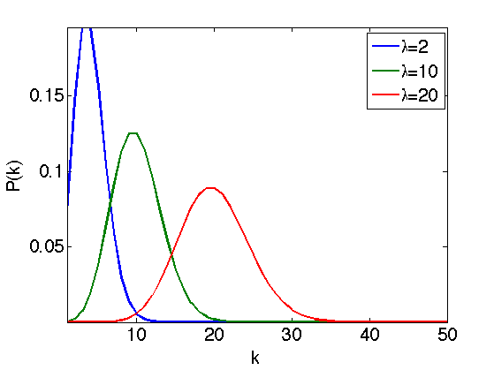
This model corresponds to a photon count, where \(\lambda\) is proportional to the number of photons that hits the receptor during the exposition time. This is useful to model medical imaging (confocal microscopy), TEP and SPECT tomography, and digital camera noises.
The goal of denoising is to retrieve the value of \(f_0(x)=\lambda(x)\), the true image value, which corresponds to a clean image.
Note that \(\lambda\) is the mean of the distribution, but is also its variance, so that the noise intensity perturbating the image pixel \(f(x)\) is proportional to \(f_0(x)\).
We load a clean, unquantized image.
n = 256;
name = 'lena';
f0u = rescale( load_image(name,n) );
Quantize the values to given \(\lambda\) range.
lmin = 1; lmax = 40; f0 = floor( rescale(f0u,lmin,lmax) );
Generate the noisy image.
f = poissrnd(f0);
Display.
clf; imageplot(f0, 'Intensity map f0', 1,2,1); imageplot(f, 'Observed noisy image f', 1,2,2);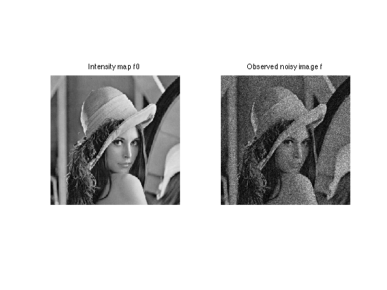
Display the difference, which shows that the noise level depends on the intensity. The noise is larger in bright areas.
clf; imageplot(f0, 'Intensity map f0', 1,2,1); imageplot(f-f0, 'f-f0', 1,2,2);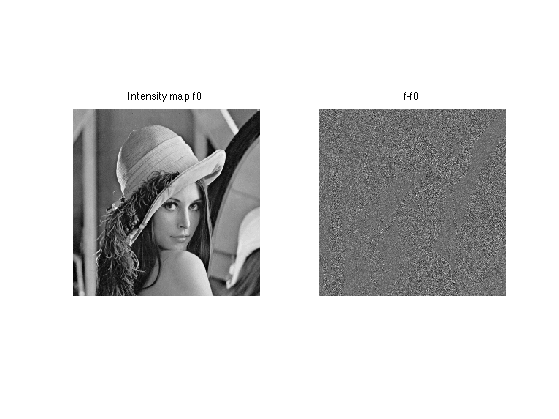
Exercice 1: (check the solution) Display noisy image contaminated by Poisson noise of varying range.
exo1;

Parameters for the wavelet transform.
Jmin = 4; options.ti = 1;
A translation invariance wavelet transform denoising computes an estimate \(\tilde f\) of the clean image \(f_0\) as \[ \tilde f = \Psi^+ \circ S_T \circ \Psi f \] where \(\Psi\) is the wavelet transform and \(S_T\) the hard thresholding operator using a well chosen threshold \(T\).
Exercice 2: (check the solution) Perform translation invariant wavelet hard thresholding directly on the Poisson noisy image \(f\). Check for an optimal threshold that maximize the SNR. Record the optimal result in fPoisson.
exo2;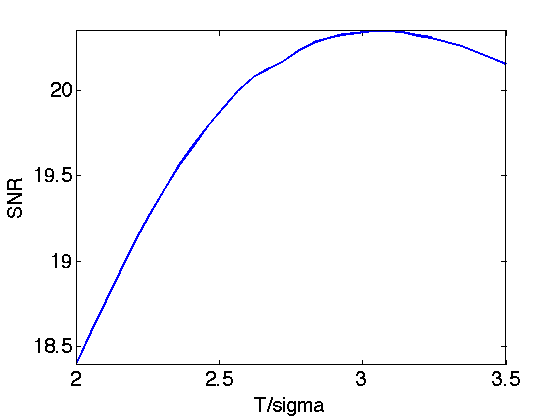
Display.
clf; imageplot(f0, 'Original image', 1,2,1); imageplot(clamp(fPoisson,min(f0(:)),max(f0(:))), strcat(['Denoised, SNR=' num2str(snr(f0,fPoisson),4)]), 1,2,2);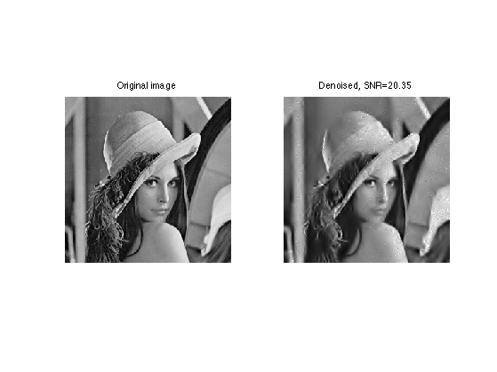
Variance Stabilization Poisson Denoising
A variance stabilization transform (VST) is a mapping \(\phi\) applied to a noisy image \(f\) so that the distribution of each pixel \(\phi(f(x))\) is approximately Gaussian.
The Anscombe variance stabilization transform (VST) is given by the non-linear mapping.
\[\phi(a) = 2 \sqrt{a+3/8}\]
It transforms a Poisson distribution \(P(\lambda)\) to a distribution with approximate variance 1, whatever \(\lambda\) is, for \(\lambda\) large enough (say \(\lambda>20\)).
Other VST have been proposed, for instance the Freeman & Tukey VST, given by
\[\phi(a) = \sqrt{a+1}+\sqrt{a}\]
Exercice 3: (check the solution) Display the estimated variance of a Poisson distribution for various \(\lambda\) (e.g. 10000 realization for each \(\lambda\)) and display the variance of a stabilized distribution (here the green curve corresponds to 'Freeman & Tukey' and the blue curve to 'Anscombe'.
exo3;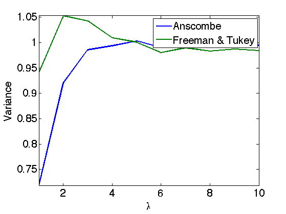
To perform denosing, one applies the VST, performs wavelet thresholding as if the data was corrupted by an additive Gaussian noise of variance \(\sigma=1\), and then applies the inverse VST.
This corresponds to computing an estimate \(\tilde f\) of the clean image \(f_0\) as \[ \tilde f = \phi^{-1} \pa{ \Psi^+ S_T \circ \Psi \circ \phi(f) } \] where \(\Psi\) is the wavelet transform and \(S_T\) the hard thresholding.
Exercice 4: (check the solution) Perform translation invariance wavelet hard thresholding on the variance stabilized image. Use for instance the Anscombe VST. Check for an optimal threshold that maximize the SNR. Record the optimal result in fVST.
exo4;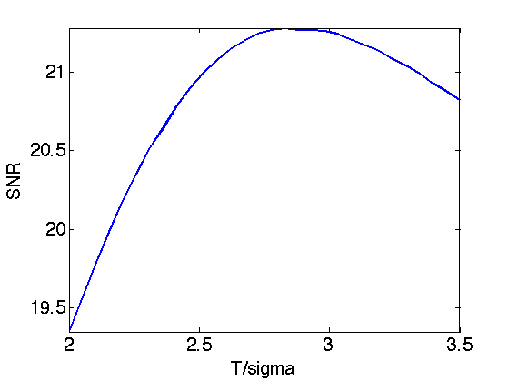
Display.
clf; imageplot(clamp(fPoisson,min(f0(:)),max(f0(:))), ... strcat(['Un-stabilized, SNR=' num2str(snr(f0,fPoisson),4)]), 1,2,1); imageplot(clamp(fVST,min(f0(:)),max(f0(:))), ... strcat(['Stabilized, SNR=' num2str(snr(f0,fVST),4)]), 1,2,2);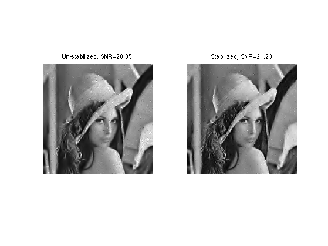
There is no close form solution for the Freeman VST. For each denoised stabilized pixel value \(b \in \RR\), one should use a Newton algorithm to solve the equation \(\phi(a)=b\) and recovered the denoised value \(a \in \RR\). This reads \[ a_{k+1} = a_k - \frac{\phi(a_k)-y}{\phi'(a_k)} \]
Exercice 5: (check the solution) Perform VST denoising using the Freeman VST.
exo5;
Multiplicative Noise
A multiplicative noise corresponds to a noise model where the clean image \(f_0\) is multiplied by the noise \(W\) to obtained the noisy image \(f(x)=W(x) f_0(x)\).
This model is useful for data acquired with an active acquisition device, for instance SAR imaging and ultra-sound imaging.
The distribution of \(f(x)\) thus has mean \(f_0(x)\) and variance proportional to \(f_0(x) \sigma\) where \(\sigma\) is the variance of \(W\).
Load a clean image.
n = 256;
name = 'boat';
f0 = rescale( load_image(name,n), 1e-2,1 );
A classical model for the multiplier noise \(W\), that is used for instance in SAR imaging, is to assume that the noise has a Gamma law of mean 1 and variance parameterized by the noise level \(L\). \[ P(W=x) \sim x^{K-1} e^{ -x/\theta } \]
where the mean of \(P\) is \(s=K \theta\) and the variance is \(\sigma^2=K \theta^2\).
This corresponds to a acquisition device which is averaging \(K\) measures with 1-sided exponential distribution.
K = 4; sigma = 1/sqrt(K);
Generate the random multiplier.
W = gamrnd(1/sigma^2, sigma^2,n,n);
Generate the noisy signal.
f = f0.*W;
Display.
clf; imageplot(f0, 'Intensity map f0', 1,2,1); imageplot(f, 'Observed noisy image f', 1,2,2);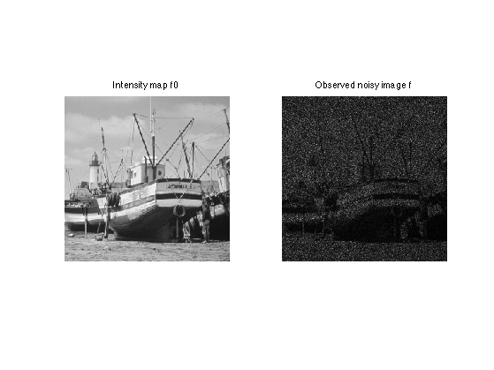
Display the difference, which shows that the noise level depends on the intensity. The noise is larger in bright areas.
clf; imageplot(f0, 'Intensity map f0', 1,2,1); imageplot(f-f0, 'f-f0', 1,2,2);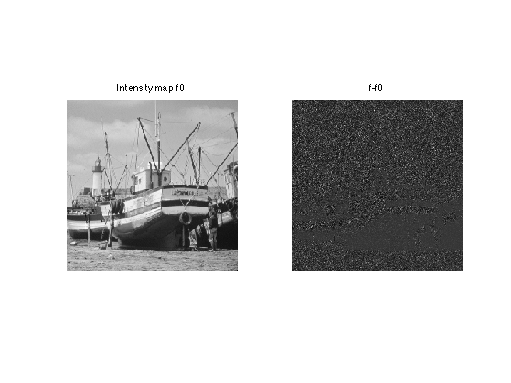
Exercice 6: (check the solution) Generate several noisy images for several noise levels.
exo6;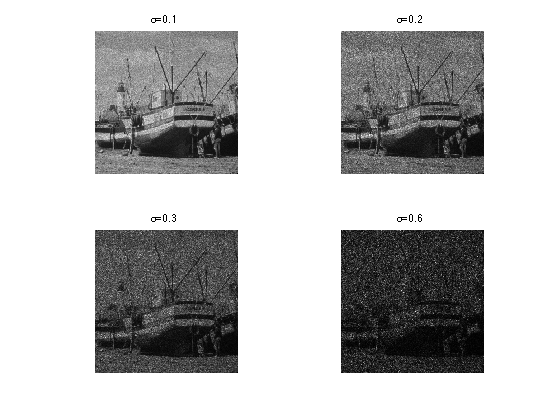
Exercice 7: (check the solution) Perform translation invariance wavelet hard thresholding directly on the noisy image \(f=f_0 W\). Check for an optimal threshold that maximize the SNR. Record the optimal result in fMult.
exo7;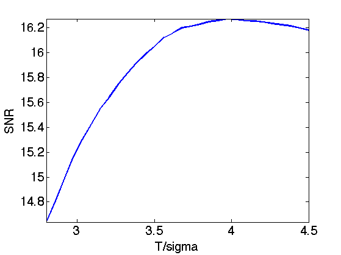
Display.
clf; imageplot(f0, 'Original image', 1,2,1); imageplot(clamp(fMult,min(f0(:)),max(f0(:))), strcat(['Denoised, SNR=' num2str(snr(f0,fMult),4)]), 1,2,2);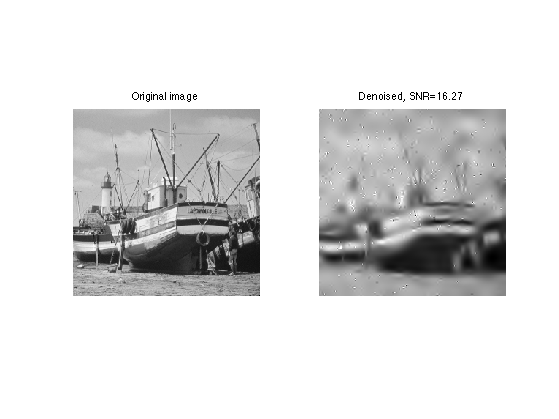
Variance Stabilization for Multiplicative Noise
An approximate variance stabilization transform consist in taking the log. The \(\log(f)-a\) image is then equal to \(\log(f_0)\) contaminated by \(log(W)-a\) which is not too far from a centered Gaussian distribution if the variance of \(W\) is not too large.
The value of \(a\) should be chosen as the mean value of the random variable \(\log(f)\) so that \(\log(W)-a\) has zero mean. There exists close form for the value of \(a\) as a function of \(\sigma=1/\sqrt{K}\), which we use here, where \(\psi\) is the polygamma function.
Important: Scilab user should replace psi by dlgamma.
a = psi(K) - log(K);
Error using @(s,T)max3(1-T^2./max(abs(s).^2,1e-9),0) Not enough input arguments. Error in index (line 328) a = psi(K) - log(K);
Display stabililized image.
clf; imageplot(f, 'f', 1,2,1); imageplot(clamp(log(f)-a,-2,2), 'log(f)', 1,2,2);
Distribution of the noise multiplier and of the log.
clf; subplot(2,1,1); hist(W(:),100); axis('tight'); subplot(2,1,2); hist(log(W(:))-a,100); axis('tight');
Exercice 8: (check the solution) Perform translation invariance wavelet hard thresholding on the variance stabilized image using the log. Check for an optimal threshold that maximize the SNR. Record the optimal result in fVST.
exo8;
Display.
clf; imageplot(clamp(fMult,min(f0(:)),max(f0(:))), strcat(['Un-stabilized, SNR=' num2str(snr(f0,fMult),4)]), 1,2,1); imageplot(clamp(fVST,min(f0(:)),max(f0(:))), strcat(['Stabilized, SNR=' num2str(snr(f0,fVST),4)]), 1,2,2);